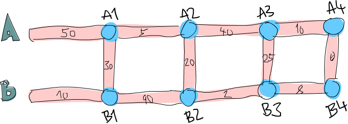

函數式地思考來解決問題
在這一章中，我們會檢視幾個有趣的問題，並嘗試用函數式的方式來漂亮地解決他們。我們並不會介紹新的概念，我們只是練習我們剛學到的寫程式的技巧。每一節都會探討不同的問題。會先描述問題，然後用最好的方式解決他。
運算逆波蘭表示法(Reverse Polish notation form)
我們在學校學習數學的時候，我們多半都是用中置(infix)的方式來寫數學式。例如說，我們會寫 10 - (4 + 3) * 2。+, *, - 是中置運算子(infix operators)。在 Haskell 中就像是 + 或 elem 一樣。這種寫法對於人類來說很容易閱讀與理解，但缺點是我們必須用括號來描述運算的優先順序。
逆波蘭表示法是另外一種數學式的描述方法。乍看之下顯得怪異，但他其實很容易理解並使用。因為我們不需要括弧來描述，也很容易放進計算機裡面運算。儘管現在的計算機都是用中置的方式讓你輸入，有些人仍堅持用 RPN 的計算機。前述的算式如果表達成 RPN 的話會是 10 4 3 + 2 * -。我們要如何計算他的結果呢？可以想想堆疊，基本上你是從左向右閱讀算式。每當碰到一個數值，就把他堆上堆疊。當我們碰到一個運算子。就把兩個數值從堆疊上拿下來，用運算子運算兩個數值然後把結果推回堆疊中。當你消耗完整個算式的時候，而且假設你的算式是合法的，那你就應該只剩一個數值在堆疊中，

我們再接著看 10 4 3 + 2 * -。首先我們把 10 推到堆疊上，所以堆疊現在是 10。下一個接著的輸入是 4，我們也把他推上堆疊。堆疊的狀態便變成 10, 4。接著也對下一個輸入 3 做同樣的事，所以堆疊變成 10, 4, 3。然後便碰到了第一個運算子 +。我們把堆疊最上層的兩個數值取下來（所以堆疊變成 10）把兩個數值加起來然後推回堆疊上。堆疊的狀態便變成 10, 7。我們再把輸入 2 推上堆疊，堆疊變成 10, 7, 2。我們又碰到另一個運算子，所以把 7 跟 2 取下，把他們相乘起來然後推回堆疊上。7 跟 2 相乘的結果是 14，所以堆疊的狀態是 10, 14。最後我們碰到了 -。我們把 10 跟 14 取下，將他們相減然後推回堆疊上。所以現在堆疊的狀態變成 -4。而我們已經把所有數值跟運算子的消耗完了，所以 -4 便是我們的結果。
現在我們知道我們如何手算 RPN 運算式了，接下來可以思考一下我們寫一個 Haskell 的函數，當他接到一個 RPN 運算式，像是 "10 4 3 + 2 * -" 時，他可以給出結果。
這個函數的型別會是什麼樣呢？我們希望他接受一個字串當作參數，並產出一個數值作為結果。所以應該會是 solveRPN :: (Num a) => String -> a。
小建議：在你去實作函數之前，先想一下你會怎麼宣告這個函數的型別能夠幫助你釐清問題。在 Haskell 中由於我們有夠強的型別系統，光從函數的宣告就可以得到許多資訊。

當我們要實作一個問題的解法時，你可以先動手一步一步解看看，嘗試從裡面得到一些靈感。我們這邊把每一個用空白隔開的數值或運算子都當作獨立的一項。所以把 "10 4 3 + 2 * -" 這樣一個字串斷成一串 list ["10","4","3","+","2","*","-"] 應該會有幫助。
接下來我們要如何應用這個斷好的 list 呢？我們從左至右來走一遍，並保存一個工作用的堆疊。這樣有讓你想到些什麼可以用的嗎？沒錯，在 folds 的那一章裡面，我們提到基本上當你需要從左至右或由右至左走過一遍 list 的時候並產生些結果的時候。我們都能用 fold 來實作他。
在這個 case 中由於我們是從左邊走到右邊，所以我們採取 left fold。accumulator 則是選用堆疊，而 fold 的結果也會是一個堆疊，只是裡面只有一個元素而已。
另外要多考慮一件事是我們用什麼來代表我們的堆疊？我們可以用 list 來代替，list 的 head 就可以當作是堆疊的頂端。畢竟要把一個元素加到 list 的 head 要比加到最後要有效率多。所以如果我們有一個堆疊，裡面有 10, 4, 3，那我們可以用 [3,4,10] 來代表他。
現在我們有了足夠的資訊來寫出我們的函數。他會接受一個字串 "10 4 3 + 2 * -"，隨即用 words 來斷成 list ["10","4","3","+","2","*","-"]。接下來我們做一個 left fold 來產生出只有一個元素的堆疊，也就是 [-4]。我們把這個元素從 list 取出便是最後的結果。
來看看我們的實作：
import Data.List
solveRPN :: (Num a) => String -> a
solveRPN expression = head (foldl foldingFunction [] (words expression))
where foldingFunction stack item = ...
我們接受一個運算式並把他斷成一串 List。然後我們用一個 folding 函數來 fold 這串 list。注意到我們用 [] 來當作起始的 accumulator。這個 accumulator 就是我們的堆疊，所以 [] 代表一個空的堆疊。在運算之後我們得到一個只有一個元素的堆疊，我們呼叫 head 來取出他並用 read 來轉換他。
所以我們現在只缺一個接受堆疊的 folding 函數，像是可以接受 [4,10] 跟 "3"，然後得到 [3,4,10]。如果是 [4,10] 跟 "*"，那就會得到 [40]。但在實作之前，我們先把我們的函數改寫成 point-free style，這樣可以省下許多括號。
import Data.List
solveRPN :: (Num a) => String -> a
solveRPN = head . foldl foldingFunction [] . words
where foldingFunction stack item = ...
看起來好多了。我們的 folding 函數會接受一個堆疊、新的項，並回傳一個新的堆疊。我們使用模式匹配的方式來取出堆疊最上層的元素，然後對 "*" 跟 "-" 做匹配。
solveRPN :: (Num a, Read a) => String -> a
solveRPN = head . foldl foldingFunction [] . words
where foldingFunction (x:y:ys) "*" = (x * y):ys
foldingFunction (x:y:ys) "+" = (x + y):ys
foldingFunction (x:y:ys) "-" = (y - x):ys
foldingFunction xs numberString = read numberString:xs
我們用展開成四個模式匹配。模式會從第一個開始嘗試匹配。所以 folding 函數會看看目前的項是否是 "*"。如果是，那就會將 [3,4,9,3] 的頭兩個元素綁定到 x，y 兩個名稱。所以 x 會是 3 而 y 等於 4。ys 便會是 [9,3]。他會回傳一個 list，只差在 x 跟 y 相乘的結果為第一個元素。也就是說會把最上層兩個元素取出，相乘後再放回去。如果第一個元素不是 "*"，那模式匹配就會比對到 "+"，以此類推。
如果項並未匹配到任何一個運算子，那我們就會假設這個字串是一個數值。如果他是一個數值，我們會用 read 來把字串轉換成數值。並把這個數值推到堆疊上。
另外注意到我們加了 Read a 這像 class constraint，畢竟我們要使用到 read 來轉換成數值。所以我們必須要宣告成他要屬於 Num 跟 Read 兩種 typeclass。（譬如說 Int,Float 等）
我們是從左至右走過 ["2","3","+"]。一開始堆疊的狀態是 []。首先他會用 [] 跟 "2" 來餵給 folding 函數。由於此項並不是一個運算子。他會用 read 讀取後加到 [] 的開頭。所以堆疊的狀態變成 [2]。接下來就是用 [2] 跟 ["3"] 來餵給 folding 函數，而得到 [3,2]。最後再用 [3,2] 跟 "+" 來呼叫 folding 函數。這會堆疊頂端的兩個數值，加起來後推回堆疊。最後堆疊變成 [5]，這就是我們回傳的數值。
我們來試試看我們新寫的函數：
ghci> solveRPN "10 4 3 + 2 * -" -4 ghci> solveRPN "2 3 +" 5 ghci> solveRPN "90 34 12 33 55 66 + * - +" -3947 ghci> solveRPN "90 34 12 33 55 66 + * - + -" 4037 ghci> solveRPN "90 34 12 33 55 66 + * - + -" 4037 ghci> solveRPN "90 3 -" 87
看起來運作良好。這個函數有一個特色就是他很容易改寫來支持額外的運算子。他們也不一定要是二元運算子。例如說我們可以寫一個運算子叫做 "log"，他會從堆疊取出一個數值算出他的 log 後推回堆疊。我們也可以用三元運算子來從堆疊取出三個數值，並把結果放回堆疊。甚至是像是 "sum" 這樣的運算子，取出所有數值並把他們的和推回堆疊。
我們來改寫一下我們的函數讓他多支援幾個運算子。為了簡單起見，我們改寫宣告讓他回傳 Float 型別。
import Data.List
solveRPN :: String -> Float
solveRPN = head . foldl foldingFunction [] . words
where foldingFunction (x:y:ys) "*" = (x * y):ys
foldingFunction (x:y:ys) "+" = (x + y):ys
foldingFunction (x:y:ys) "-" = (y - x):ys
foldingFunction (x:y:ys) "/" = (y / x):ys
foldingFunction (x:y:ys) "^" = (y ** x):ys
foldingFunction (x:xs) "ln" = log x:xs
foldingFunction xs "sum" = [sum xs]
foldingFunction xs numberString = read numberString:xs
看起來不錯，沒有疑問地 / 是除法而 ** 是取 exponential。至於 log 運算子，我們只需要模式匹配一個元素，畢竟 log 只需要一個元素。而 sum 運算子，我們只回傳一個僅有一個元素的堆疊，包含了所有元素的和。
ghci> solveRPN "2.7 ln" 0.9932518 ghci> solveRPN "10 10 10 10 sum 4 /" 10.0 ghci> solveRPN "10 10 10 10 10 sum 4 /" 12.5 ghci> solveRPN "10 2 ^" 100.0
由於 read 知道如何轉換浮點數，我們也可在運算適中使用他。
ghci> solveRPN "43.2425 0.5 ^" 6.575903
有這樣一個容易拓展到浮點數而且動到的程式碼又在十行以內的函數，我想是非常棒的。
有一件事要留意的是這個函數對於錯誤處理並不好。當我們碰到非法輸入的時候，他就會直接當掉。之後我們碰到 Monad 的時候我們會寫一個容錯的版本，他的型別會是 solveRPN :: String -> Maybe Float。當然我們現在也可以寫一個，不過那會有點麻煩，因為會有一大堆檢查 Nothing 的動作。如果你希望挑戰的話，也可以盡管嘗試。（提示：你可以用 reads 來看看一次 read 是否會成功）
路徑規劃
我們接下來的問題是：你的飛機剛剛降落在英格蘭的希思羅機場。你接下來有一個會議，你租了一台車希望盡速從機場前往倫敦市中心。
從希思羅機場到倫敦有兩條主要道路，他們中間有很多小路連接彼此。如果你要走小路的話都會花掉一定的時間。你的問題就是要選一條最佳路徑讓你可以盡快前往倫敦。你從圖的最左邊出發，中間可能穿越小路來前往右邊。

你可以從圖中看到，從希思羅機場到倫敦在這個路徑配置下的最短路徑是先選主要道路 B，經由小路到 A 之後，再走一小段，轉到 B 之後繼續往前走。如果採取這個路徑的話，會花去 75 分鐘。如果選其他道路的話，就會花更多時間。
我們任務就是要寫一個程式，他接受道路配置的輸入，然後印出對應的最短路徑。我們的輸入看起來像是這樣：
50 10 30 5 90 20 40 2 25 10 8 0
我們在心中可以把輸入的數值三個三個看作一組。每一組由道路 A,道路 B,還有交叉的小路組成。而要能夠這樣組成，我們必須讓最後有一條虛擬的交叉小路，只需要走 0 分鐘就可以穿越他。因為我們並不會在意在倫敦裡面開車的成本，畢竟我們已經到達倫敦了。
正如我們在解 RPN 計算機的問題的時候，我們是用三步驟來解題：
* 首先忘掉 Haskell，想想我們自己是怎麼一步步解題的。
* 想想如何在 Haskell 中表達我們的資料。
* 在 Haskell 中藥如何對這些資料做運算來產生出解答。
在介紹 RPN 計算機的章節中，我們首先自己用人腦計算表達式，在心中維持一個堆疊然後一項一項處理。我們決定用一個字串來表達我們的表達式。最後，我們用 left fold 來走過我們這一串 list，並算出結果。
究竟我們要怎麼用手算出從希思羅機場到倫敦的最短路徑呢？我們可以觀察整章圖片，猜測哪一條是最短路徑然後希望我們有猜對。這樣的作法對於很小的輸入可以成功，但如果我們的路徑超過 10000 組呢？這樣我們不知道我們的解法是不是最佳解，我們只能說可能是。
所以那並不是一個好作法。這邊有一張簡化過後的圖。
你能想出來到道路 A 上第一個交叉點的最短路徑嗎？（標記成 A1 的點）這太容易了。我們只要看看從道路 A 出發或是從道路 B 出發穿越至道路 A 兩種作法哪種比較短就好。很明顯的，從道路 B 出發的比較短，只要花費 40 分鐘，然而從道路 A 則要花費 50 分鐘。那到交叉點 B1 呢？同樣的作法可以看出從道路 B 出發只要花費 10 分鐘，遠比從道路 A 出發然後穿越小路要花費少，後者要花費 80 分鐘！
現在我們知道要到達 A1 的最短路徑是經由 B 然後鄒小路到達，共花費 40。而我們知道要達到 B1 的最短路徑則是直接走 B，花費 10。這樣的知識有辦法幫助我們得知到下一個交叉點的最短路徑嗎？可以的。
我們來看看到達 A2 的最短路徑是什麽。要到達 A2，我們必須要從 A1 走到 A2 或是從 B1 走小路。由於我們知道到達 A1 跟 B1 的成本，我們可以很容易的想出到達 A2 的最佳路徑。到達 A1 要花費 40，而從 A1 到 A2 需要 5。所以 B, C, A 總共要 45。而要到達 B1 只要 10，但需要額外花費 110 分鐘來到達 B2 然後走小路到達 A2。所以最佳路徑就是 B, C, A。同樣地到達 B2 最好的方式就是走 A1 然後走小路。
也許你會問如果先在 B1 跨到道路 A 然後走到 A2 的情況呢？我們已經考慮過了從 B1 到 A1 的情況，所以我們不需要再把他考慮進去。
現在我們有了至 A2 跟 B2 的最佳路徑，我們可以一直重複這個過程直到最右邊。一旦我們到達了 A4 跟 B4，那其中比較短的就是我們的最佳路徑了。
基本上對於第二組而言，我們只是不斷地重複之前的步驟，只是我們考慮進在前面的最佳路徑而已。當然我們也可以說在第一步就考慮進了前面的最佳路徑，只是他們都是 0 而已。
總結一下。要得到從希思羅機場到倫敦的最短路徑。我們首先看看到達下一個道路 A 上的交叉點的最短路徑。共有兩種選擇的路徑，一是直接從道路 A 出發然後走到交叉點，要不然就是從道路 B 出發，走到第一個交叉點然後走小路。得到結果後記住結果。接著再用同樣的方法來得到走到道路 B 上下一個交叉點的最短路徑，並也記住結果。然後我們看看要走到再下一個道路 A 上的交叉點，究竟是從這個道路 A 上的交叉點往前走，或是從對應的道路 B 上的交叉點往前走再走到對面，兩種選擇哪種比較好。記下比較好的選擇，然後也對對應的道路 B 上的交叉點做一次這個過程。做完全部組之後就到達最右邊。一旦到達最右邊，最佳的選擇就是我們的最短路徑了。
基本上當我們到達最右邊的時候，我們記下了最後停在道路 A 的最短路徑跟最後停在道路 B 的最短路徑。其中比較短的是我們真正的最短路徑。現在我們已經知道怎麼用手算出答案。如果你有閒工夫，你可以拿紙筆對於任何一組道路配置算出他的最短路徑。
接下來的問題是，我們要如何用 Haskell 的型別來代表這裡的道路配置呢？一種方式就是把起始點跟交叉點都當作圖的節點，並連到其他的交叉點。如果我們想像其實起點也有一條長度為 1 的虛擬道路連接彼此，那每個交叉點或是節點就都連接對面的節點了。同時他們也連到下一個交叉點。唯一的例外是最後一個節點，他們只連接到對面。
data Node = Node Road Road | EndNode Road data Road = Road Int Node
一個節點要碼是一個普通的節點，他包含有通往下一個交叉點的路徑資訊，還有往對面道路的資訊。或是一個終端點，只包含往對面節點的道路資訊。一條道路包涵他多長，還有他指向哪裡。例如說，道路 A 的第一個部份就可寫成 Road 50 a1。其中 a1 是 Node x y 這樣一個節點。而 x 跟 y 則分別指向 B1 跟 A2。
另一種方式就是用 Maybe 來代表往下一個交叉點走的路。每個節點有指到對面節點的路徑部份，但只有不是終端節點的節點才有指向下一個交叉點的路。
data Node = Node Road (Maybe Road) data Road = Road Int Node
這些是用 Haskell 來代表道路系統的方式，而我們也能靠他們來解決問題。但也許我們可以想出更簡單的模型？如果我們想想之前手算的方式，我們每次檢查都只有檢查三調路徑的長度而已。在道路 A 的部份，跟在道路 B 的部份，還有接觸兩個部份並將他們連接起來的部份。當我們觀察到 A1 跟 B1 的最短路徑時，我們只考慮第一組的三個部份，他們分別花費 50, 10 跟 30。所以道路系統可以用四組來表示：50, 10, 30，5, 90, 20，40, 2, 25 跟 10, 8, 0。
讓我們資料型別越簡單越好，不過這樣已經是極限了。
data Section = Section { getA :: Int, getB :: Int, getC :: Int } deriving (Show)
type RoadSystem = [Section]
這樣很完美，而且對於我們的實作也有幫助。Section 是一個 algebraic data type，包含三個整數，分別代表三個不同部份的道路長。我們也定義了型別同義字，說 RoadSystem 代表包含 section 的 list。
當然我們也可以用一個 tuple (Int, Int, Int) 來代表一個 section。使用 tuple 對於一些簡單的情況是比較方便，但對於比較複雜的情況定義自己的 algebraic data type 會比較好。他讓型別系統獲得比較多的資訊。(Int, Int, Int) 畢竟也可能被使用在定義三維空間中的一個向量，只用 tuple 讓我們可能把這兩種情形混雜起來使用。如果我們用 Section 跟 Vector 的話就不會不小心搞混了。
從希思羅機場到倫敦的道路系統便可以這樣表示：
heathrowToLondon :: RoadSystem heathrowToLondon = [Section 50 10 30, Section 5 90 20, Section 40 2 25, Section 10 8 0]
我們現在要做的就是用 Haskell 實作我們先前的解法。所以我們應該怎樣宣告我們計算最短路徑函數的型別呢？他應該接受一個道路系統作為參數，然後回傳一個路徑。我們會用一個 list 來代表我們的路徑。我們定義了 Label 來表示 A, B 或 C。並且也定義一個同義詞 Path：
data Label = A | B | C deriving (Show) type Path = [(Label, Int)]
而我們的函數 optimalPath 應該要有 optimalPath :: RoadSystem -> Path 這樣的型別。如果被餵給 heathrowToLondon 這樣的道路系統，他應該要回傳下列的路徑：
[(B,10),(C,30),(A,5),(C,20),(B,2),(B,8)]
我們接下來就從左至右來走一遍 list，並沿路上記下 A 的最佳路徑跟 B 的最佳路徑。我們會 accumulate 我們的最佳路徑。這聽起來有沒有很熟悉？沒錯！就是 left fold。
當我們手動做解答的時候，有一個步驟是我們不斷重複的。就是檢查現有 A 跟 B 的最佳路徑以及目前的 section，產生出新的 A 跟 B 的最佳路徑。舉例來說，最開始我們的最佳路徑是 [] 跟 []。我們看過 Section 50 10 30 後就得到新的到 A1 的最佳路徑為 [(B,10),(C,30)]，而到 B1 的最佳路徑是 [(B,10)]。如果你們把這個步驟看作是一個函數，他接受一對路徑跟一個 section，並產生出新的一對路徑。所以型別是 (Path, Path) -> Section -> (Path, Path)。我們接下來繼續實作這個函數。
提示：把 (Path, Path) -> Section -> (Path, Path) 當作 left fold 用的二元函數，fold 要求的型態是 a -> b -> a。
roadStep :: (Path, Path) -> Section -> (Path, Path)
roadStep (pathA, pathB) (Section a b c) =
let priceA = sum $ map snd pathA
priceB = sum $ map snd pathB
forwardPriceToA = priceA + a
crossPriceToA = priceB + b + c
forwardPriceToB = priceB + b
crossPriceToB = priceA + a + c
newPathToA = if forwardPriceToA <= crossPriceToA
then (A,a):pathA
else (C,c):(B,b):pathB
newPathToB = if forwardPriceToB <= crossPriceToB
then (B,b):pathB
else (C,c):(A,a):pathA
in (newPathToA, newPathToB)
上面的程式究竟寫了些什麽？首先他根據先前 A 的最佳解計算出道路 A 的最佳解，之後也如法炮製計算 B 的最佳解。使用 sum $ map snd pathA，所以如果 pathA 是 [(A,100),(C,20)]。priceA 就是 120。forwardPriceToA 就會是我們要付的成本。如果我們是從先前在 A 上的交叉點前往。那他就會等於我們至先前交叉點的最佳解加上目前 section 中 A 的部份。crossPriceToA 則是我們從先前在 B 上的交叉點前往 A 所要付出的代價。他是先前 B 的最佳解加上 section 中 B 的部份加上 C 的長。同樣地方式也可以決定 forwardPriceToB 跟 crossPriceToB。
現在我們知道了到 A 跟 B 的最佳路徑，我們需要根據這些資訊來構造到 A 跟 B 的整體路徑。如果直接走到 A 耗費較少的話，我們就把 newPathToA 設定成 (A,a):pathA。這樣做的事就是把 Label A 跟 section 的長度 a 接到最佳路徑的前面。要記得 A 是一個 label，而 a 的型別是 Int。我們為什麽要接在前面而不是 pathA ++ [(A,a)] 呢？因為接在 list 的前面比起接在後端要有效率多了。不過這樣產生出來的 list 就會相反。但要把 list 再反過來並不難。如果先走到 B 再穿越小路走到 A 比較短的話，那 newPathToA 就會包含這樣走的路線。同樣的道理也可以套用在 newPathToB 上。
最後我們回傳 newPathToA 跟 newPathToB 這一對結果。
我們把 heathrowToLondon 的第一個 section 餵給我們的函數。由於他是第一個 section，所以到 A 跟 B 的最佳路徑就是一對空的 list。
ghci> roadStep ([], []) (head heathrowToLondon) ([(C,30),(B,10)],[(B,10)])
要記住包含的路徑是反過來的，要從右邊往左邊讀。所以到 A 的最佳路徑可以解讀成從 B 出發，然後穿越到道路 A。而 B 的最佳路徑則是直接從 B 出發走到下一個交叉點。
優化小技巧：當我們寫 priceA = sum $ map snd pathA 的時候。我們是在計算每步的成本。如果我們實作 roadStep 成 (Path, Path, Int, Int) -> Section -> (Path, Path, Int, Int) 的話就可以不必那麼做。其中的整數型別代表 A 跟 B 上的最小成本。
現在我們有了一個函數他接受一對路徑跟一個 section，並產生新的最佳路徑。我們可以用一個 left fold 來做。我們用 ([],[]) 跟第一個 section 來餵給 roadStep 並得到一對最佳路徑。然後他又被餵給這個新得到的最佳路徑跟下一個 section。以此類推。當我們走過全部的 section 的時候，我們就會得到一對最佳路徑，而其中比較短的那個就是解答。有了這樣的想法，我們便可以實作 optimalPath。
optimalPath :: RoadSystem -> Path
optimalPath roadSystem =
let (bestAPath, bestBPath) = foldl roadStep ([],[]) roadSystem
in if sum (map snd bestAPath) <= sum (map snd bestBPath)
then reverse bestAPath
else reverse bestBPath
我們對 roadSystem 做 left fold。而用的起始 accumulator 是一對空的路徑。fold 的結果也是一對路徑，我們用模式匹配的方式來把路徑從結果取出。然後我們檢查哪一個路徑比較短便回傳他。而且在回傳之前也順便把整個結果反過來。因為我們先前提到的我們是用接在前頭的方式來構造結果的。
我們來測試一下吧！
ghci> optimalPath heathrowToLondon [(B,10),(C,30),(A,5),(C,20),(B,2),(B,8),(C,0)]
這正是我們應該得到的結果！不過跟我們預期的結果仍有點差異，在最後有一步 (C,0)，那代表我們已經在倫敦了仍然跨越小路。不過由於他的成本是 0，所以依然可以算做正確的結果。
我們找出最佳路徑的函數，現在要做的只需要從標準輸入讀取文字形式道路系統，並把他轉成 RoadSystem，然後用 optimalPath 來把他跑一遍就好了。
首先，我們寫一個函數，他接受一串 list 並把他切成同樣大小的 group。我們命名他為 groupOf。當參數是 [1..10] 時，groupOf 3 應該回傳 [[1,2,3],[4,5,6],[7,8,9],[10]]。
groupsOf :: Int -> [a] -> [[a]] groupsOf 0 _ = undefined groupsOf _ [] = [] groupsOf n xs = take n xs : groupsOf n (drop n xs)
一個標準的遞迴函數。對於 xs 等於 [1..10] 且 n 等於 3，這可以寫成 [1,2,3] : groupsOf 3 [4,5,6,7,8,9,10]。當這個遞迴結束的時候，我們的 list 就三個三個分好組。而下列是我們的 main 函數，他從標準輸入讀取資料，構造 RoadSystem 並印出最短路徑。
import Data.List
main = do
contents <- getContents
let threes = groupsOf 3 (map read $ lines contents)
roadSystem = map (\[a,b,c] -> Section a b c) threes
path = optimalPath roadSystem
pathString = concat $ map (show . fst) path
pathPrice = sum $ map snd path
putStrLn $ "The best path to take is: " ++ pathString
putStrLn $ "The price is: " ++ show pathPrice
首先，我們從標準輸入獲取所有的資料。然後我們呼叫 lines 來把 "50\n10\n30\n... 轉換成 ["50","10","30"..，然後我們 map read 來把這些轉成包含數值的 list。我們呼叫 groupsOf 3 來把 list 的 list，其中子 list 長度為 3。我們接著對這個 list 來 map 一個 lambda (\[a,b,c] -> Section a b c)。正如你看到的，這個 lambda 接受一個長度為 3 的 list 然後把他變成 Section。所以 roadSystem 現在就是我們的道路配置，而且是正確的型別 RoadSystem。我們呼叫 optimalPath 而得到一個路徑跟對應的代價，之後再印出來。
我們將下列文字存成檔案。
50 10 30 5 90 20 40 2 25 10 8 0
存成一個叫 paths.txt 的檔案然後餵給我們的程式。
$ cat paths.txt | runhaskell heathrow.hs The best path to take is: BCACBBC The price is: 75
執行成功！你可以用你對 Data.Random 的瞭解來產生一個比較大的路徑配置，然後你可以把產生的亂數資料餵給你的程式。如果你碰到堆疊溢出，試試看用 foldl' 而不要用 foldl。foldl' 是 strict 的可以減少記憶體消耗。